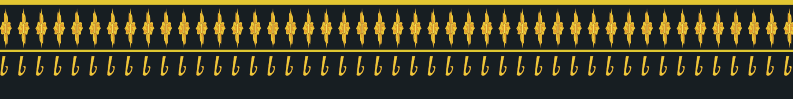
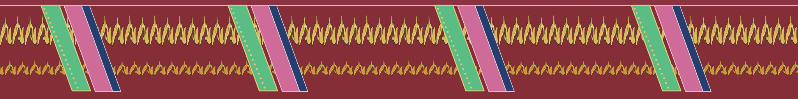

← Xem ghe trên sôngKbach từng ghe
Vẽ lại từ những phần nhìn rõ trong clip thật. Mỗi mẫu có nguồn riêng để đối chiếu. Các dải bên dưới là bản hoa văn trải phẳng; khi gắn lên mạn ghe, tỉ lệ thay đổi theo dáng ghe.
Kênh Trường Dương bạn cung cấp bổ sung góc cận trên bờ. Những đội chưa có góc hoàn thiện phù hợp trong kênh này giữ nguồn năm 2025 đã kiểm tra trước đó. Hoa văn khuất và việc ghép một số ghe với số thi đấu vẫn chưa xác minh đủ.
Tum Núp 2 · 17

Rồng xanh · mào vàng · bụng hồng; ghe trên bờ chưa ghép chắc với số 17.
Prêk On Đơk 2 · 25

Cuộn cam/vàng · dải chéo; bổ sung góc quay trên Maspéro.
Prếk Ta Cuôl · Trà Cuôn · 19

Vảy xanh · nền xanh lam; giữ nguồn đã vẽ xong năm 2025.
Chrôi Tưm Chắs · Trà Tim cũ · 08

Hoa hồng/vàng · tâm xanh · dải lá vàng; mẫu hoa riêng trong nhà ghe.
Om Pou Year · 23

Lá xanh trên nền đen · đầu đỏ/xanh; ghép ghe số 23 còn chưa chắc.
Kos Thum 1 · 49

Hoa cam xen hình thoi xanh; đã đối chiếu ghe số 49.
Pôthi Satharam 2 · 07

Nền đỏ · dải cuộn vàng; ghép ghe số 07 còn chưa chắc.
Pôthi Khsach · Kế Sách · 44

Nguồn hạ thủy ghi rõ Pô Thi Khsách; giữ hoa văn 2025 đã quan sát.
Mẫu ghe khác đã vẽ xong
Khleang · hoa vàng trên nền đen

Hoa văn đã vẽ xong; đang phủ bóng. Bản vẽ nghiên cứu riêng, chưa đưa vào đội hình đua.
Trà Tim · cuộn vàng và dải chéo

Ghe trong nhà ghe; chưa xác nhận là ghe số 08 thi đấu. Bản vẽ nghiên cứu riêng, chưa đưa vào đội hình đua.